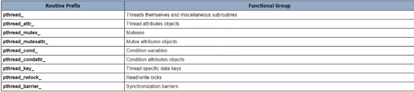

Multi-threading¶
基本概念¶
在共享内存的多处理器架构体系中，线程可以用来实现并行性。在历史上，硬件供应商已经实现了自己的专有版本的线程模型，这使得可移植性成为了软件开发者的关注点。对于UNIX系统，一个标准的C语言线程编程接口由IEEE POSIX 1003.1C标准定义了。坚持这个标准的实现被称为POSIX线程或者Pthreads。
本教程会先介绍使用Pthread的概念、动机以及设计注意事项。然后会介绍Pthreads API中的三个主要类的例程：线程管理、互斥变量以及条件变量。示例代码用于演示如何使用大部分Pthread编程初学者会用到的Pthreads接口。这个教程最后会讨论LLNL的细节，以及如何混合MPI和pthreads。当然还包含一些使用C语言编写的练习题。
水平/先决条件：本教程是为那些打算使用pthreads进行并行编程的初学者而写。初学者需要了解基本的使用C语言进行并行编程的概念。
什么是线程？¶
从技术上讲，线程被定义为一个独立地指令流，可以被调度为由操作系统运行。
对于软件开发者，独立于主程序运行的“过程”的改变就是一个对线程很好的描述，进一步定义，想象这样一个主程序（a.out）包含一系列的执行过程。然后想象所有的这些过程都能够同时和/或者独立地被操作系统调用运行。 那么这样一个程序就能称为是多线程程序。
这是如何完成的呢？在理解一个线程之前，我们需要先了解UNIX进程。进程是由 操作系统创建的，并需要相当数量的资源。通常包含程序资源和程序执行语句等信息，包括：
- 进程ID，进程组ID，用户ID和组ID
- 环境
- 工作目录
- 程序执行流程
- 注册环境
- 堆
- 栈
- 文件句柄
- 信号处理
- 共享库
- 进程同步工具（例如消息队列、管道、信号量或者共享内存）
线程使用存在于进程中的资源，但是是能够被操作系统调用并作为独立实体运行，这是因为他们只复制能使他们作为可执行代码存在的基本资源。 这个独立地控制流程能够完成，是因为线程保持它们自己的：
- 栈指针
- 注册环境
- 调度属性（例如调度策略和调度优先级）
- 一系列挂起和阻塞的信号
- 线程特定的数据
因此，总结的说，在UNIX环境中，一个线程
- 存在于一个进程中，并且使用进程的资源
- 有自己独立地控制流程，只要它的父进程存在并且支持它
- 仅仅复制它能够独立运行所需要的资源
- 可以与其他同样的独立（或存在依赖关系的）线程共享进行资源
- 如果父进程死亡，线程也跟着死亡
- 是“轻量级的”，因为大部分开销已经通过创建进程时已经完成了。
因为在同一个进程里面的线程共享相同的资源
- 其他所有的线程都会看到其中一个线程对共享系统资源（如关闭文件）所作的更改。
- 指向同一个地方的指针拥有相同的数据
- 读写同一块内存区域是可能的，因此需要程序员做显式的同步数据
为什么使用Pthreads？¶
轻量型 : 和创建以及管理一个进程相比，线程的创建所需的系统开销更少，而且管理线程相对管理进程所需的资源更少。
例如，下面的表格中列出了fork()子调用和pthread_create()子调用所需要的时间对比。时间反映了50000个进程/线程的创建，使用time函数进行计时，单位为秒，没有使用任何的优化技术
==============================================================================
C Code for fork() creation test
==============================================================================
#include <stdio.h>
#include <stdlib.h>
#define NFORKS 50000
void do_nothing() {
int i;
i= 0;
}
int main(int argc, char *argv[]) {
int pid, j, status;
for (j=0; j < NFORKS; j++) {
/*** error handling ***/
if ((pid = fork()) < 0 ) {
printf ("fork failed with error code= %d\n", pid);
exit(0);
}
/*** this is the child of the fork ***/
else if (pid ==0) {
do_nothing();
exit(0);
}
/*** this is the parent of the fork ***/
else {
waitpid(pid, status, 0);
}
}
}
==============================================================================
C Code for pthread_create() test
==============================================================================
#include <pthread.h>
#include <stdio.h>
#include <stdlib.h>
#define NTHREADS 50000
void *do_nothing(void *null) {
int i;
i=0;
pthread_exit(NULL);
}
int main(int argc, char *argv[]) {
int rc, i, j, detachstate;
pthread_t tid;
pthread_attr_t attr;
pthread_attr_init(&attr);
pthread_attr_setdetachstate(&attr, PTHREAD_CREATE_JOINABLE);
for (j=0; j < NTHREADS; j++) {
rc = pthread_create(&tid, &attr, do_nothing, NULL);
if (rc) {
printf("ERROR; return code from pthread_create() is %d\n", rc);
exit(-1);
}
/* Wait for the thread */
rc = pthread_join(tid, NULL);
if (rc) {
printf("ERROR; return code from pthread_join() is %d\n", rc);
exit(-1);
}
}
pthread_attr_destroy(&attr);
pthread_exit(NULL);
}高效的通信/数据交换 :
- 考虑在高性能计算环境中使用Pthreads的主要原因是为了获取到最佳的性能。特别是，如果一个程序使用MPI进行节点通信，则有可能通过使用Pthreads来提高性能。
- MPI共享库进程通过共享内存来实现节点间任务通信，其中涉及至少一个内存复制操作（进程到进程）
- 对于Pthreads，就不需要中间内存复制了，因为线程在同一个进程中共享相同的地址空间。因此不需要传递数据本身，而可以高效的通过传递指向数据的指针
- 在最坏的场景下，Pthread通信将更多的是cache到CPU或者内存到CPU的带宽问题。这些通信的速度都是远远高于MPI共享内存通信的速度的
其它原因 :
- 在其他几种场景下，线程化的应用程序比非线程化的应用程序提供更多潜在的性能提升和实际优势
- 重叠的CPU和I/O工作，例如一个程序可能有部分会长时间执行I/O操作。当一个线程等待I/O系统调度完成时，可以由其他线程来完成CPU密集型的工作
- 优先级/实时调度：更重要的任务能够取代或者中断低优先级的任务
-
异步事件处理：以不同频率和持续时间进行的服务可以交叉执行。例如一个web服务器能够同时和先前的连接进行数据传输以及管理新连接的到来
-
一个完美的例子应该是网页浏览器，在浏览器运行时，同时存在多个交叉任务而且任务的优先级不同
- 另外一个好的例子就是现代操作系统了，这使得线程被广泛的使用。
设计线程化的程序¶
串行化编程 :在现代，在多核心处理器的机器上，pthreads非常适合并行编程。并且在一般情况下适用于并行编程的场景都能够适用于Pthreads进行并行编程。
进行并行程序设计，有很多注意实现：
- 适用何种并行编程模型
- 问题的细分
- 负载均衡
- 线程通信
- 数据依赖/同步
- 同步和竞争条件
- 内存问题
- I/O问题
- 程序的复杂性
- 程序员的努力/成本/时间
一般来说，为了使一个程序能够利用Pthreads，它必须能够被组织成分散的、可以并发执行的独立任务。例如，如果子例程1和子例程2能够实时的相互轮转、交叉和重叠的话，那么他们就适合线程。具有以下特性的程序可能非常适合使用Pthreads：
- 能够被多个任务同时执行的工作或者同时操作的数据
- 长时间的I/O阻塞
- 在某些地方占用太多的CPU周期但是不执行有用的内容
- 必须响应异步事件
- 某些工作比其他工作更加重要（优先级中断）
存在几种常见的线程程序模型：
- 管理者/执行者：管理者线程将任务分配给具体的执行者线程，通常管理者处理所有的输入并将其工作打包成任务分发。最终有两种常见的管理者/执行者模式：静态执行线程池/动态执行线程池。
- 管道：一个任务被分解成一些列的子操作，每个子操作由不同的线程同时处理。汽车组装流水线就是这种模式最好的描述了。
- 对端：类似于管理者/执行者模式，但是主线程在创建完其他线程后，它仍旧参与工作
共享内存模型 :
- 所有线程都能够访问相同的全局共享内存。
- 线程同时拥有其私有数据
- 程序员有责任对访问到的全局共享数据进行同步（保护）
线程安全 :
- 线程安全：简而言之是指，能够同时执行多个线程的应用程序不会破坏共享数据或者产生竞争条件
-
举个例子，假设你的应用程序创建了几个线程，每个子线程都调用同一个共享库子例程：
- 这个共享库子例程访问/修改一个全局的结构体或者内存中的位置
- 当每个线程调用该子例程的时候，有可能这些线程会同时尝试修改这个全局结构体/内存位置
- 如果例程没有采用某种同步结构来防止数据损坏，那么它就不是线程安全的。
- 对于外部用户库例程，如果用户无法100%确保例程是线程安全的，那么就有可能遇到偶发的问题
- 建议：如果你的应用程序是否是线程安全的库或者其他对象，请小心。当存在疑问时，应当假设其实线程不安全的，直到能够证明其线程安全为止。这可以通过序列化的调用该例程来证明。
-
线程的限制
-
尽管Pthreads API是ANSI/IEEE标准的。但是实现通常会以标准未指定的方式变化。
- 正是因为这个原因，所以一个程序在一个平台上运行良好，但是到其他平台上可能无法运行或者执行后可能得到错误的结果
- 例如，允许的最大线程数和默认线程堆栈大小是设计程序时要考虑的两个重要限制。
- 本教程稍后会讨论几个线程的限制
Pthread API¶
- 原来的Pthreads API是在ANSI / IEEE POSIX 1003.1 - 1995标准中定义的。后来包括Pthreads规范在内的POSIX标准还在发展并经过修订。
-
包括Pthreads API的子例程大概可以分成四个部分：
- 线程管理：直接在线程上工作的例程 - 创建，分离，连接等。它们还包括设置/查询线程属性的功能（可连接，调度等）
- 互斥：处理同步的子例程称为互斥（Mutex），它是“mutual exclusion”的缩写。互斥功能提供创建、销毁、锁定和解锁互斥锁操作。这些由互斥属性函数来补充，这些函数设置或修改与互斥量相关的属性
- 条件变量：基于程序员指定的条件，解决共享互斥体例程之间的通信问题。这一组包含基于指定的变量值创建、销毁、等待和发送信号的功能。同时还包含设置/查询条件变量属性的函数
- 同步：管理读写锁和屏障的例程
-
命名约定：线程库中的所有标识符都以pthread_开头。 一些例子如下所示。 